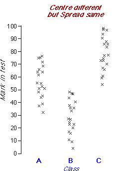
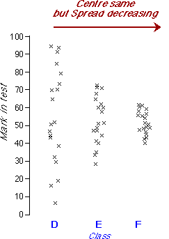

Summarising centre and spread
Most data sets exhibit variability — all values are not the same! Two important aspects of the distribution of values are particularly important.
In this chapter, Numerical summaries of marks, we examine how to describe centre and spread with numerical values called summary statistics. Numerical summaries of centre and spread give particularly concise and meaningful comparisons of different groups of marks.
Three year 4 classes are taught the same topic with different teaching methods. There is considerable variation in the marks achieved in the three classes.
|  |
Observe that:
|
A numerical measure of centre should describe this tendency for some classes to get better marks (on average) than others.
Different teaching methods were used for three other classes. In Class E, all students were given the same amount of help whereas in Classes D and F, a third of the students were given extra help. In Class D, the top students were given extra tuition whereas in Class F it was the weakest students to whom help was targeted.
There is no tendency for any of these classes to achieve better marks than the others — the centres of all three distributions are close to 50.
|  |
However
|
A numerical measure of spread should describe how consistent the marks are in a class.